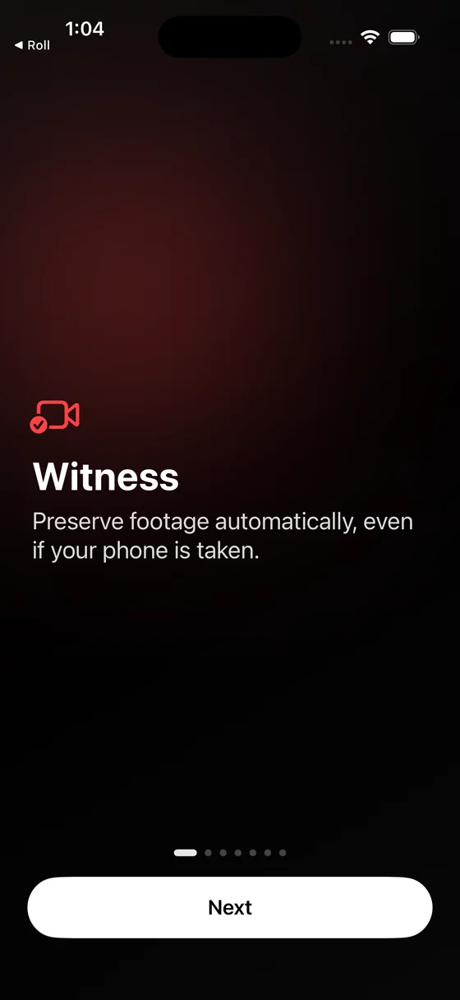
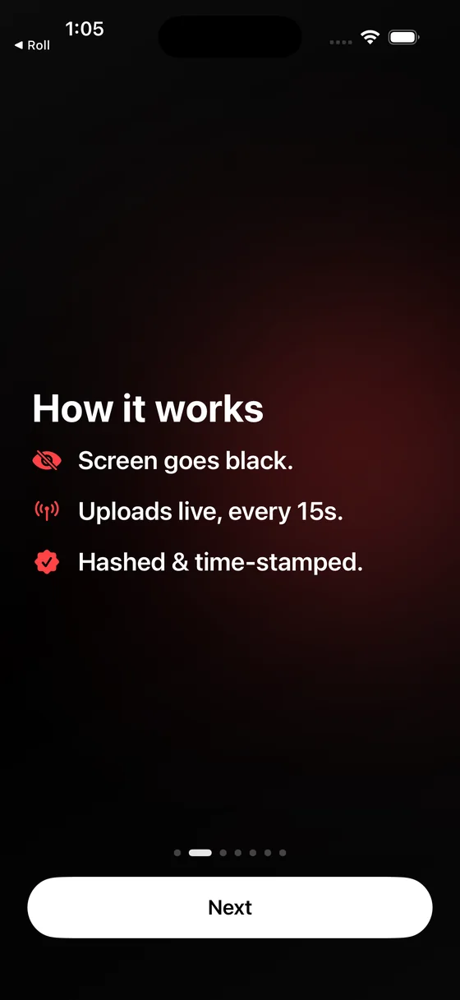
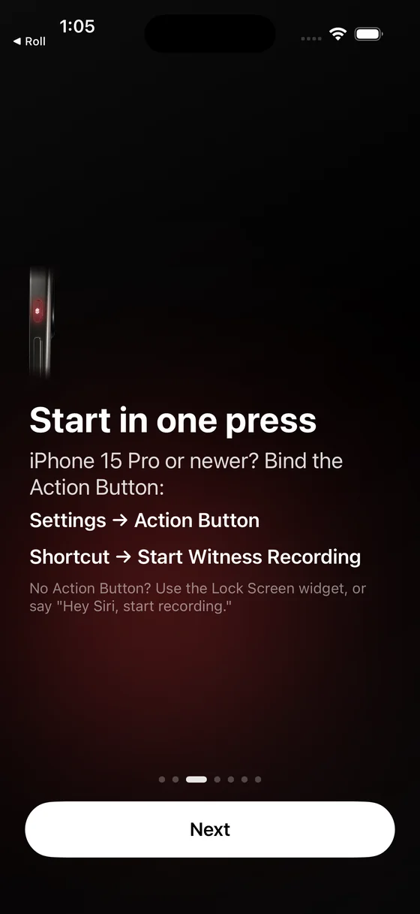
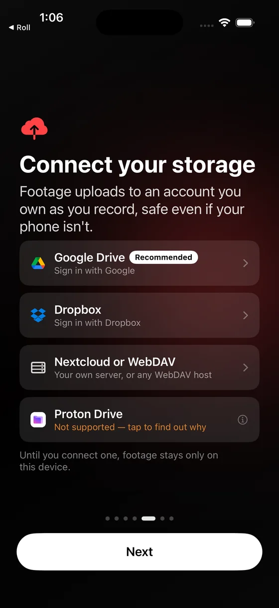
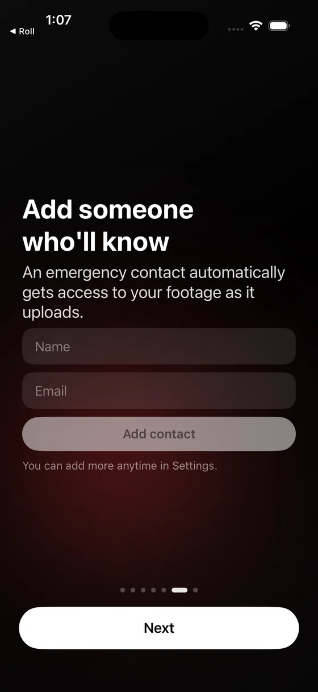
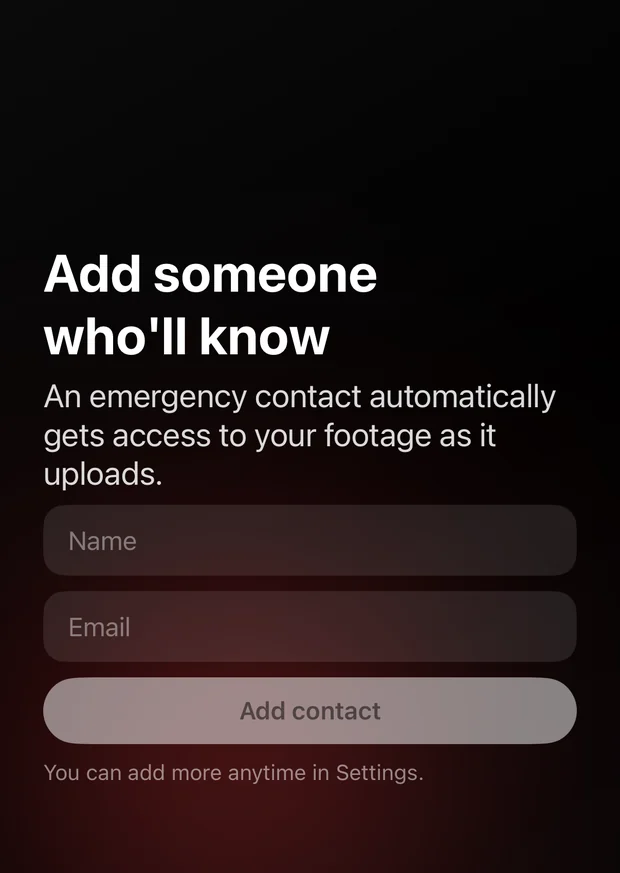
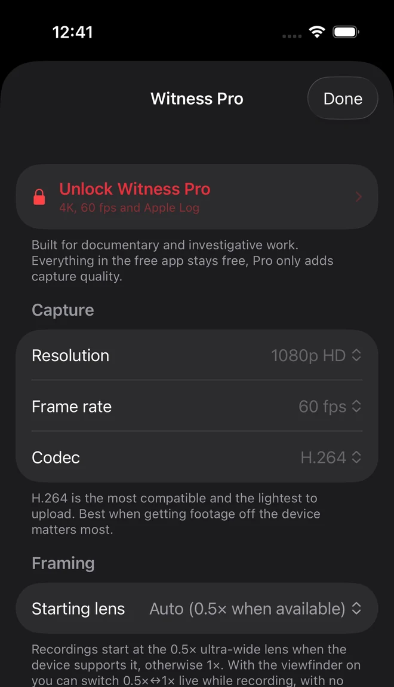

They can take the phone.
Not the footage.
Witness records with the screen black and uploads to a cloud account you own every 15 seconds, while you are still filming.





A phone is a single point of failure
It can be grabbed, smashed, ordered unlocked and wiped, or simply run out of battery. Video that exists only on the device is evidence for exactly as long as the device survives, and the moments most worth recording are the moments it is least likely to.
Witness treats a recording as something to get off the phone immediately, rather than something to save when you press stop.
What happens when you hit record
Four things, continuously, for as long as you are filming.
The screen goes black
The display is fully dark for the whole recording, so the phone reads as idle. Stopping takes a triple-tap and then a press-and-hold, which is hard to trigger by accident or by someone grabbing it.
Footage is cut into 15-second pieces
Each piece is finalised as a complete, playable file the moment it ends. Nothing waits for you to press stop, so there is no half-written file to lose.
Each piece is fingerprinted, then uploaded
A SHA-256 hash is computed on the device before anything moves, then the piece uploads over cellular or Wi-Fi. Nothing is deleted locally until your storage provider confirms it arrived.
A custody record is written alongside it
Every hash, capture time and GPS reading goes into a session manifest that is re-uploaded as you record. If the phone is seized mid-encounter, the record of what was captured is already safe.
Your footage, your account
Witness has no server. Recordings go from the phone to storage you already control, and nowhere else.
- Google Drive
- Requested with the restricted
drive.filescope, which reaches only the files the app itself creates. The rest of your Drive stays invisible to it. - Dropbox
- App-folder access, confined to its own directory. Emergency contacts can be granted access automatically here too.
- Nextcloud or WebDAV
- Your own server, including one you host yourself, with no third-party company holding the footage. The protocol has no sharing API, so emergency contacts are not automatic on this one.
The developer cannot see any of it. There is no backend, so there is no copy to hand over, subpoena or lose. The only thing sent to a third party is an irreversible hash of the session manifest, submitted to a time-stamp authority, which carries no footage, location or identity.
Someone else has it before you can ask
Name a colleague, an editor or a legal support number once. From then on, every recording's folder is shared with them automatically as the footage arrives.
You do not send anything. You do not unlock anything. If you are detained, arrested or simply out of contact, the person you nominated already has the material and can act on it while you cannot.
Automatic sharing works on Google Drive and Dropbox. WebDAV has no sharing interface, so on that destination you share the folder yourself, and the app says so rather than letting you assume otherwise.

Proof that does not depend on trusting you
Every 15-second piece is hashed with SHA-256 on the device before it moves. Those hashes are listed in a session manifest alongside UTC capture times and GPS coordinates, and the manifest is counter-signed by an independent RFC 3161 time-stamp authority.
A newsroom or a court can check all of it with OpenSSL on their own machine: the footage hashes to the manifest, the manifest hashes to the signed token, and the token comes from a third party with no stake in the outcome. Neither the app nor its developer is anywhere in that chain.
Built for people who cannot afford to lose the recording
Witness was made for civilians documenting police conduct. The same properties matter to anyone filming where equipment gets taken.
Legal observers
A record that survives arrest, with times and locations already attached to every piece of it.
Recording continues while the phone is in someone else's hands, and the custody manifest is written to your storage as the encounter happens rather than after it. Whatever reached the account before the phone was taken is complete and checkable.
Journalists
Provenance that stands up when footage is challenged, and survives confiscation in the field.
Community organisers
Documentation of conduct over time, held in an account your group controls.
Practical field guide for activists and journalists
Recording ICE and immigration enforcement
Replacing the discontinued ACLU Mobile Justice app
What it will not do
Being straight about the limits is part of being usable under pressure.
- It cannot upload without a network. With no signal, chunks queue on the device until there is one.
- It cannot help if you are compelled to unlock the phone. Uploaded footage is beyond the reach of the device, but not of the cloud account the phone is signed into.
- ProRes recordings stay on the device. They are far too large to send live, and the app says so before you switch to that mode.
- It is not legal advice and does not make recording lawful where it is not.

Witness Pro
Everything that protects footage is free and stays free. Pro adds capture quality for professional work: 4K, 24/25/60 fps, Apple Log, ProRes 422, and exportable evidence packages.
Cancel any time in your App Store settings.
A one-time purchase. Nothing renews.
Pro exists mainly so a one-person project can keep an App Store listing active. It gates nothing that keeps footage safe.
Know your rights
In most US states, openly recording on-duty police in public is constitutionally protected, provided you do not physically interfere. Rules on distance, audio consent and interference vary by jurisdiction and change over time. The ACLU's know-your-rights guidance is a starting point in the United States.
Witness provides no legal advice. Check your local laws, keep a safe distance, and say that you are recording if it is safe to do so.